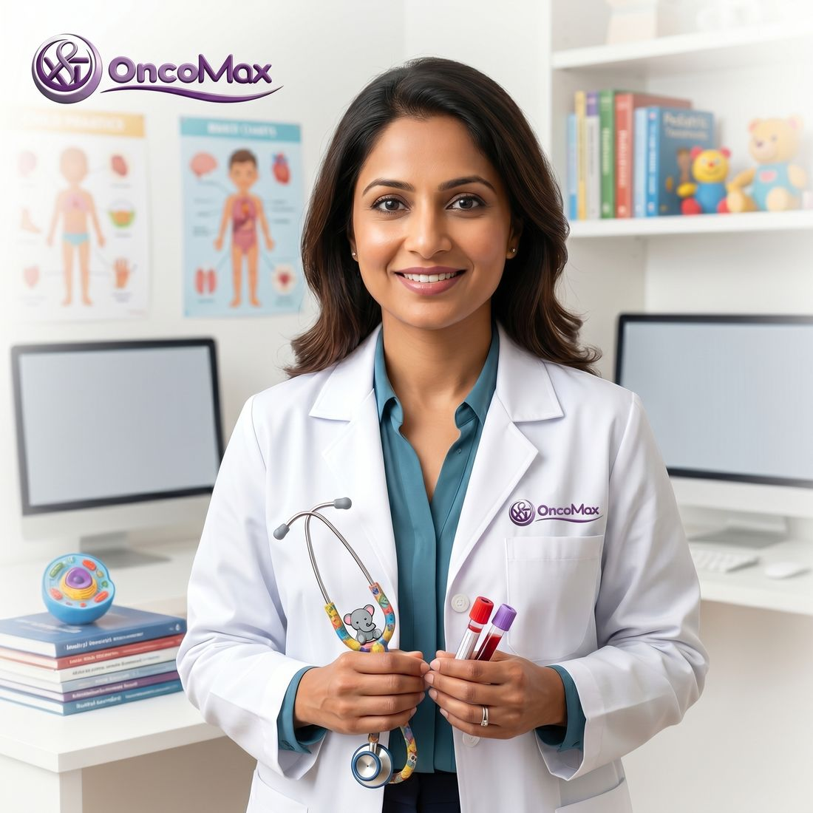

Niños y adolescentes
Oncología pediátrica
Atención para niños y adolescentes.
Ver detallesOncología pediátrica
¿A quién ayuda?
A niños, adolescentes y sus familias.
¿Qué incluye?
Evaluación, orientación, seguimiento y comunicación adecuada para cada edad.
Objetivo:
Brindar una atención cercana que también incluya a la familia.